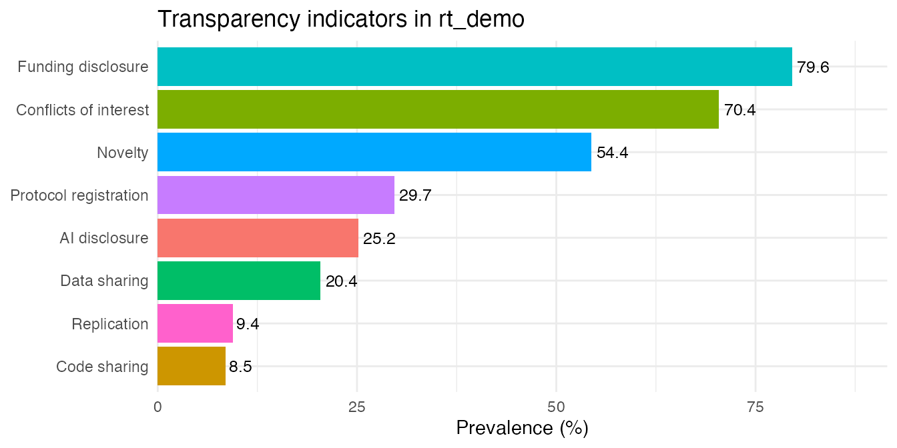
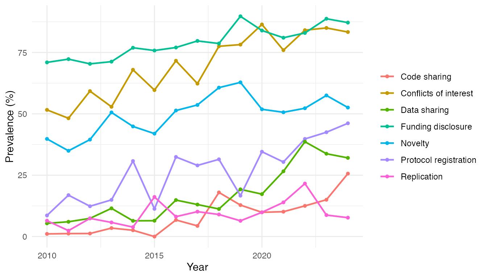
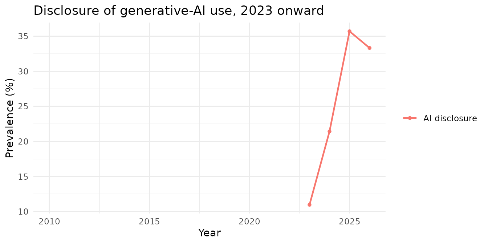

Summarizing transparency across a corpus
Source:vignettes/transparency-summary.Rmd
transparency-summary.RmdThe detector functions (rt_all_pmc(),
rt_data_code_pmc()) describe one article at a
time. Most studies of research transparency instead ask
corpus-level questions: across thousands of articles, how often is each
practice present? Is it improving over time? Does it differ by journal
or article type?
This vignette shows how to go from per-article detector output to
that kind of summary, using rt_summary(),
rt_score() and rt_plot().
From one article to many
Running a detector on a single article returns a one-row table of indicators:
library(rtransparency)
#> rtransparency 1.0.0: identify indicators of transparency (conflicts of interest, funding,
#> protocol registration, novelty, replication, data and code sharing, and AI-use
#> disclosure) in biomedical articles. GitHub: https://github.com/choxos/rtransparency | vignette("rtransparency")
xml <- system.file(
"extdata", "PMID32171256-PMC7071725.xml", package = "rtransparency"
)
one <- rt_all_pmc(xml, remove_ns = TRUE)
one[, c("pmid", "is_coi_pred", "is_fund_pred", "is_register_pred")]
#> # A tibble: 1 × 4
#> pmid is_coi_pred is_fund_pred is_register_pred
#> <chr> <lgl> <lgl> <lgl>
#> 1 32171256 TRUE FALSE FALSETo study a corpus you run a detector over many files and stack the
rows; purrr::map_dfr(files, rt_all_pmc, remove_ns = TRUE)
returns all eight indicators per article in one pass. The result is one
row per article with the indicator columns is_coi_pred,
is_fund_pred, is_register_pred,
is_open_data, is_open_code,
is_novelty_pred, is_replication_pred and
is_ai_pred. is_ai_pred is NA for
articles published before 2023, and rt_summary() drops
those NAs, so the AI-disclosure prevalence is computed only
over the articles where the indicator applies.
This package ships a small simulated table of that
shape, rt_demo, so the rest of the vignette runs without
downloading anything:
data(rt_demo)
head(rt_demo)
#> # A tibble: 6 × 11
#> pmid year type is_coi_pred is_fund_pred is_register_pred is_open_data
#> <chr> <int> <chr> <lgl> <lgl> <lgl> <lgl>
#> 1 28143943 2011 review-… FALSE TRUE TRUE FALSE
#> 2 31314758 2014 systema… FALSE TRUE TRUE FALSE
#> 3 30397608 2022 systema… TRUE TRUE FALSE TRUE
#> 4 37703615 2026 researc… TRUE TRUE TRUE TRUE
#> 5 26030375 2022 researc… TRUE TRUE FALSE FALSE
#> 6 21738034 2018 researc… TRUE TRUE FALSE FALSE
#> # ℹ 4 more variables: is_open_code <lgl>, is_novelty_pred <lgl>,
#> # is_replication_pred <lgl>, is_ai_pred <lgl>Prevalence of each indicator
rt_summary() reports, for each indicator, how many
articles were assessed, how many were positive, the apparent prevalence
and its 95% confidence interval:
s <- rt_summary(rt_demo)
knitr::kable(
s[, c("label", "n_articles", "n_detected", "percent", "conf_low", "conf_high")],
digits = 1,
col.names = c("Indicator", "Assessed", "Detected", "%", "CI low", "CI high")
)| Indicator | Assessed | Detected | % | CI low | CI high |
|---|---|---|---|---|---|
| Conflicts of interest | 1200 | 845 | 70.4 | 67.8 | 72.9 |
| Funding disclosure | 1200 | 955 | 79.6 | 77.2 | 81.8 |
| Protocol registration | 1200 | 356 | 29.7 | 27.2 | 32.3 |
| Data sharing | 1200 | 245 | 20.4 | 18.2 | 22.8 |
| Code sharing | 1200 | 102 | 8.5 | 7.1 | 10.2 |
| Novelty | 1200 | 653 | 54.4 | 51.6 | 57.2 |
| Replication | 1200 | 113 | 9.4 | 7.9 | 11.2 |
| AI disclosure | 282 | 71 | 25.2 | 20.5 | 30.6 |
Correcting for detector error
A text-mining detector is not perfect, so the
observed prevalence is a biased estimate of the
true prevalence. rt_summary() corrects for
this using each detector’s sensitivity and specificity estimates (the
Rogan-Gladen estimator). The correction is on by default and adds
adj_percent, adj_low and
adj_high:
knitr::kable(
s[, c("label", "percent", "adj_percent", "adj_low", "adj_high")],
digits = 1,
col.names = c("Indicator", "Apparent %", "Corrected %", "CI low", "CI high")
)| Indicator | Apparent % | Corrected % | CI low | CI high |
|---|---|---|---|---|
| Conflicts of interest | 70.4 | 70.8 | 68.2 | 73.4 |
| Funding disclosure | 79.6 | 79.4 | 77.0 | 81.7 |
| Protocol registration | 29.7 | 30.8 | 28.2 | 33.6 |
| Data sharing | 20.4 | 25.7 | 22.8 | 28.9 |
| Code sharing | 8.5 | 9.1 | 7.5 | 11.1 |
| Novelty | 54.4 | 62.8 | 59.2 | 66.3 |
| Replication | 9.4 | 8.7 | 7.0 | 10.6 |
| AI disclosure | 25.2 | NA | NA | NA |
The accuracy values come from rt_accuracy:
rt_accuracy
#> # A tibble: 7 × 5
#> variable label sensitivity specificity source
#> <chr> <chr> <dbl> <dbl> <chr>
#> 1 is_coi_pred Conflicts of interest 0.992 0.995 Serghiou et…
#> 2 is_fund_pred Funding disclosure 0.997 0.981 Serghiou et…
#> 3 is_register_pred Protocol registration 0.955 0.997 Serghiou et…
#> 4 is_open_data Data sharing 0.765 0.99 rtransparen…
#> 5 is_open_code Code sharing 0.881 0.995 rtransparen…
#> 6 is_novelty_pred Novelty 0.838 0.952 rtransparen…
#> 7 is_replication_pred Replication 0.928 0.985 rtransparen…AI-use disclosure has no bundled accuracy estimate here, so its
corrected value is NA. Novelty’s estimate comes from a
hand-labeled gold set
(inst/benchmark/results_novelty_replication.md); the
data/code values are reproducible benchmark estimates for the native
detector, not untouched external-validation estimates. Replication’s
correction is approximate: its sensitivity comes from a
replication-enriched sample and its specificity from the representative
2023 sample, so it does not rest on the single-design validation of
conflicts of interest, funding or registration, and the Rogan-Gladen
interval does not propagate uncertainty in these estimates. To use your
own validation (or the published oddpub values for data and
code), pass any table with variable,
sensitivity and specificity columns:
my_acc <- rt_accuracy
my_acc$sensitivity[my_acc$variable == "is_open_data"] <- 0.758
rt_summary(rt_demo, indicators = "is_open_data", accuracy = my_acc)[,
c("label", "percent", "adj_percent")]
#> # A tibble: 1 × 3
#> label percent adj_percent
#> <chr> <dbl> <dbl>
#> 1 Data sharing 20.4 26.0How many practices per article
rt_score() adds a per-article count of the openness
practices met (conflicts of interest, funding, registration, data and
code). Tabulating it shows how many articles meet zero, one, two … of
the five practices:
scored <- rt_score(rt_demo)
knitr::kable(
as.data.frame(table(`Practices met` = scored$n_indicators)),
col.names = c("Practices met", "Articles")
)| Practices met | Articles |
|---|---|
| 0 | 52 |
| 1 | 288 |
| 2 | 467 |
| 3 | 305 |
| 4 | 74 |
| 5 | 14 |
Subgroups
Pass by to summarize within a grouping column, such as
article type:
by_type <- rt_summary(rt_demo, by = "type", adjust = FALSE)
knitr::kable(
by_type[by_type$indicator == "is_open_data",
c("type", "label", "n_articles", "percent")],
digits = 1,
col.names = c("Type", "Indicator", "Assessed", "%")
)| Type | Indicator | Assessed | % |
|---|---|---|---|
| review-article | Data sharing | 241 | 19.5 |
| systematic-review | Data sharing | 132 | 23.5 |
| research-article | Data sharing | 827 | 20.2 |
Plots
rt_plot() returns a ggplot, so it composes
with the usual ggplot2 layers. The default is a prevalence bar
chart:

Use type = "trend" with a year column to see prevalence
over time:
rt_plot(rt_demo, type = "trend", year = "year")
#> Warning: Removed 13 rows containing missing values or values outside the scale range
#> (`geom_line()`).
#> Warning: Removed 13 rows containing missing values or values outside the scale range
#> (`geom_point()`).
The AI-disclosure line begins only in 2023, because the indicator is
NA before then; the rising data-sharing and AI lines
illustrate the kind of trend these summaries are meant to surface.
Restrict a plot to particular indicators with indicators =,
for example to follow AI-use disclosure on its own:
rt_plot(rt_demo, type = "trend", year = "year", indicators = "is_ai_pred") +
ggtitle("Disclosure of generative-AI use, 2023 onward")
#> Warning: Removed 13 rows containing missing values or values outside the scale range
#> (`geom_line()`).
#> Warning: Removed 13 rows containing missing values or values outside the scale range
#> (`geom_point()`).
Set adjusted = TRUE in either plot to show the
error-corrected prevalence instead of the apparent prevalence.
Putting it together
A typical analysis is therefore: run a detector over your corpus, stack the rows, then
results <- purrr::map_dfr(xml_files, rt_all_pmc, remove_ns = TRUE)
rt_summary(results) # prevalence + corrected prevalence
rt_score(results) # per-article practice count
rt_plot(results, type = "trend", year = "year")For the per-indicator detection methodology, see
vignette("rtransparency").